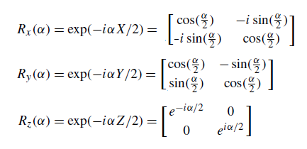
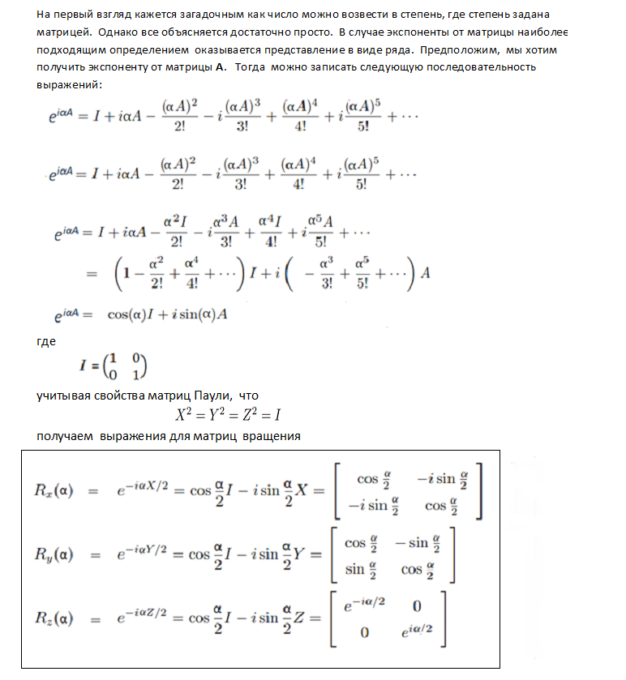
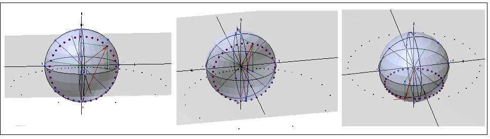
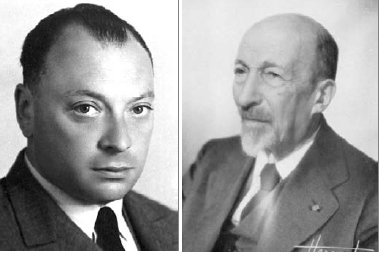
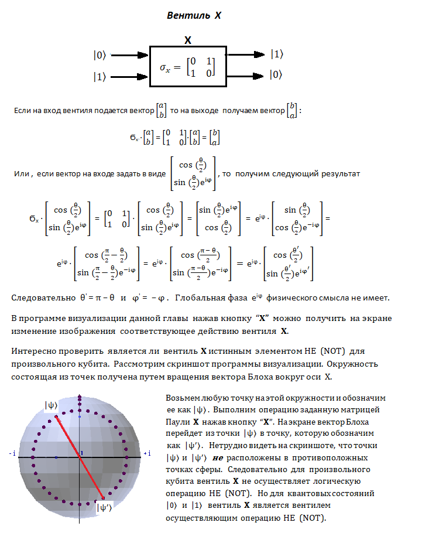
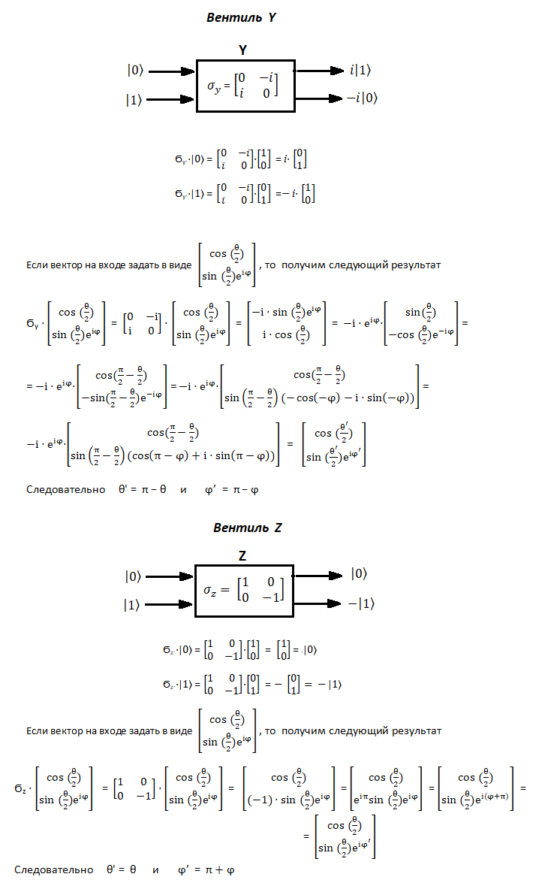
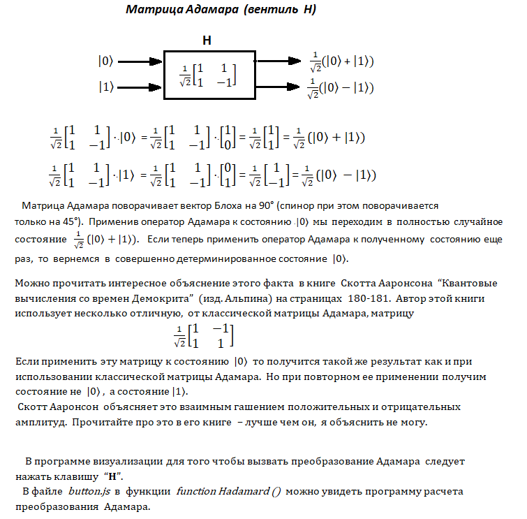

This chapter discusses the visualization of quantum rotations. The points on the sphere, that appear
when the Bloch vector rotates, are mapped to the complex plane (it is shown in gray color).
Points on the complex plane are displayed in black color.
Mapping points, lying on a sphere, to a complex plane is called a fractional-linear transformation.
Circles lying on a sphere, using a fractional-linear transformation, are transformed into circles lying on a complex plane.
To determine the value of the quantum state |ψ〉, set the values of the polar and azimuth angles
either using the GUI in the upper right corner of the program, or using the keys located
under the GUI. The intersection of a red-colored straight line with a gray horizontal plane
sets the value of complex coordinates. This value is (Z = ...) you can see it
at the very bottom of the middle part of the program window.
Rotation around the axes X, Y and Z is set using the keys "R(X+"), "R(X-)", "R(Y+"), "R(Y-)", R(Z+), "R(Z-)".
"Erase rotation points" - Erases all points resulting from rotation on the Bloch sphere and on the complex plane
"X", "Y", "Z", "H" - keys define the action of the Pauli and Hadamard operators
Sphere rotation - left mouse button drag
Sphere size - middle mouse button drag, or mousewheel
Sphere movement on screen - right mouse button drag
Логические операции над кубитами, так же как и в классической электронике, осуществляют специальные логически активные элементы, называемые квантовыми вентилями. Операцию, выполняемую любым однокубитным вентилем, можно представить как поворот вектора, характеризующего состояние кубита, в другую точку сферы Блоха. Данная программа позволяет визуально наблюдать как работают квантовые вращения и некоторые наиболее известные вентили.
В четвертой главе были рассмотрены матрицы Паули. Одной из основных областей, где находят применение эти матрицы являются квантовые вращения. Но, перед тем как заняться непосредственно вращениями, необходимо рассмотреть, казалось бы, несвязанную с этим тему - возведение числа в степень, когда в качестве показателя степени выступает матрица. Рассмотрим этот вопрос подробнее.
Матрицы Паули σx, σx, σx, которые в дальнейшем мы будем обозначать также как X, Y и Z , когда они
возведены в степень, то они порождают операторы вращения, которые поворачивают
вектор Блоха = ( sin(θ)cos(φ), sin(θ)sin(φ), cos(θ) ) вокруг осей x, y и z на заданный угол α:


Может также возникнуть вопрс - почему для осуществления поворотов можно использовать возведение в степень.
Для ответа на этот вопрос следует вспомнить, что экспоненту можно рассматривать как оператор выполняющий
поворот вектора
eαi = cos(α) + i·sin(α)
На youtube есть хорошее видео на эту тему How (and why) to raise e to the power of a matrix
Вернемся к квантовым вращениям.
В программе визуализации данной главы можно наблюдать вращения вектора Блоха вокруг осей X, Y и Z. Вращения выполняются путем нажатия кнопок "R(X+)" и "R(X-)", "R(Y+)" и "R(Y-)", "R(Z+)" и "R(Z-)". Можно задать три значения шага вращения при помощи кнопок "2°", "5°" и "10°". На сфере Блоха можно будет при этом увидеть соответствующие точки. Также будут выводиться значения вектора состояния. Одновременно на комплексной плоскости z = 0 отобразятся точки (черный цвет и чуть меньшего размера) получившиеся в результате дробно-линейного преобразования (смотри главу 5). В интернете я не нашел других программ которые позволяли бы визуально и интерактивно получать такие изображения.
Стереть с экрана построенные в результате вращения точки можно нажав клавишу "Erase rotation points".
Предположим, что исходное квантовое состояние с углами θ и φ задающими положение вектора Блоха равно
|ψ〉 = cos(θ/2)|0〉 + sin(θ/2)⋅eiφ|1〉
Тогда квантовое состояние после поворота вокруг оси X можно на угол α рассчитать по формуле
|ψ'〉 = Rx(α)· |ψ〉
Тогда новое квантовое состояние |ψ'〉 будет определяться вектором Блоха
с углами θ' и φ'
|ψ'〉 = cos(θ'/2)|0〉 + sin(θ'/2)⋅eiφ'|1〉
В файле button.js в функции function X_plus() можно увидеть программу расчета квантового состояния |ψ'〉 и углов θ' и φ' с комментариями к расчету применительно к повороту вокруг оси X. Расчет поворотов вокруг осей Y и Z осуществляется подобным образом.
Вращая вектор Блоха, можно увидеть, что окружности на сфере отображаются в окружности на комплексной плоскости z = 0,
которая проходит горизонтально через центр сферы (имеет серый цвет).
Такие отображения являются характерным признаком конформного отбражения (дробно-линейного преобразования).
На следующем скриншоте показаны окружности на сфере полученные путем вращения вектора Блоха вокруг осей X, Y и Z
и соответствующие им окружности на комплексной плоскости (они отображены более мелкими черными точками).

На видеоролике со сферой Римана Riemann Sphere показано отображение точек сферы на плоскость с северного полюса сферы.
Для того, чтобы лучше увидеть всю картину квантовых вращений можно вращать 3D-модель сферы Блоха нажав правую клавишу мыши. Вращение колесика мыши позволяет увеличивать и уменьшать размер 3D-модели сферы, а нажав левую клавишу мыши можно перемещать 3D-модель по экрану. На не очень быстрых компьютерах лучше не нажимать кнопки вызывающие вращения слишком часто, так как программа может начать притормаживать.
Перейдем к рассмотрению матриц Паули как квантовых вентилей. Также рассмотрим вентиль Адамара H.

Вентиль X осуществляет поворот вектора Блоха на 180°
вокруг оси X, вентиль Y поворот на 180° вокруг оси Y, а вентиль Z поворот на 180° вокруг оси Z. В
соответствии с поворотами вектора Блоха изменяются квантовые состояния |ψ〉. Для визуализации поворотов используются
кнопки "X", "Y" и "Z".


По ссылке можно найти хорошие видеолекции по матрицам Паули, спину и сфере Блоха. Английский язык в них не очень сложен и также можно включить субтитры с переводом на русский. Лектор подробно приводит все выкладки на доске.
